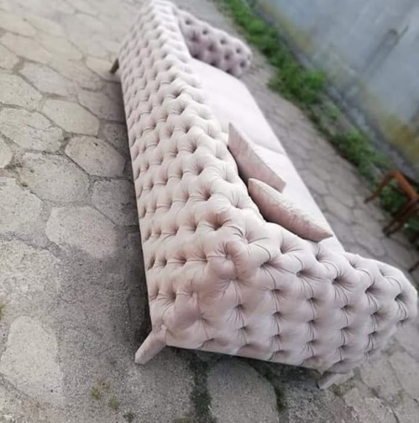

opublikowana realizacja01 / Portfolio
Forma,
która zostaje.
Oglądaj przez materiał, proporcję i detal. Pokazujemy opublikowane zdjęcie MebleKrenc oraz kierunki, w których pracujemy.
Najlepsze portfolio powstaje z własnego archiwum. Jedno zdjęcie poniżej pochodzi z publicznego profilu MebleKrenc; pozostałe kadry są wyraźnie oznaczone jako inspiracje kierunków, żeby nie przypisywać firmie cudzych realizacji.
Otwórz profil MebleKrenc ↗ inspiracja / dom
inspiracja / dom inspiracja / detal
inspiracja / detal inspiracja / sofa
inspiracja / sofa inspiracja
inspiracja inspiracja
inspiracja inspiracja / wnętrze
inspiracja / wnętrze inspiracja / biznes
inspiracja / biznes inspiracja / jadalnia
inspiracja / jadalnia inspiracja / salon
inspiracja / salon inspiracja / hotel
inspiracja / hotel inspiracja / wnętrze
inspiracja / wnętrzeWażne: zdjęcie oznaczone „opublikowana realizacja” pochodzi z publicznego profilu MebleKrenc na Facebooku. Pozostałe fotografie są kadrami referencyjnymi pokazującymi kierunki estetyczne i rodzaje przestrzeni — nie są podpisywane jako wykonane przez firmę.
02 / Twoje zdjęcia
Masz własną
realizację?
Wyślij zdjęcia swojego mebla albo wnętrza. Po uzupełnieniu archiwum wymienimy kadry referencyjne na prawdziwe realizacje.
Wyślij materiały ↗